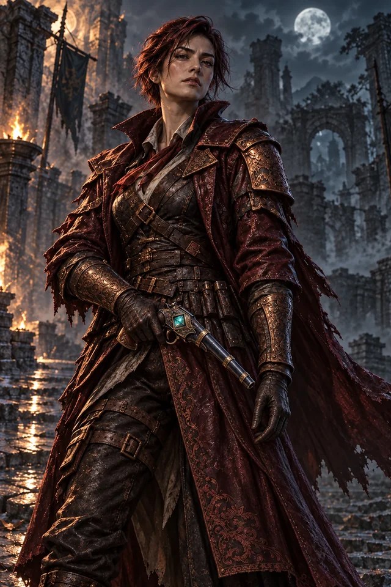

古金 × 墨綠 · 共用雕刻邊框
原創框圖／透明中心／固定角飾／重複邊線。文字與插畫獨立呈現。
典藏主框
角色、卡牌、決鬥台、結算。
151.87 px 切線 · 28 px 角飾資訊面板
戰鬥資訊、彈窗、故事面板。
143.53 px 切線 · 20 px 角飾操作薄框
操作按鈕、状态與職業角標。
119.31 px 切線 · 8–10 px 角飾
長寬比例檢查
四角不拉伸
邊線保持雕刻尺度
邊線保持雕刻尺度
原創框圖／透明中心／固定角飾／重複邊線。文字與插畫獨立呈現。
角色、卡牌、決鬥台、結算。
151.87 px 切線 · 28 px 角飾戰鬥資訊、彈窗、故事面板。
143.53 px 切線 · 20 px 角飾操作按鈕、状态與職業角標。
119.31 px 切線 · 8–10 px 角飾